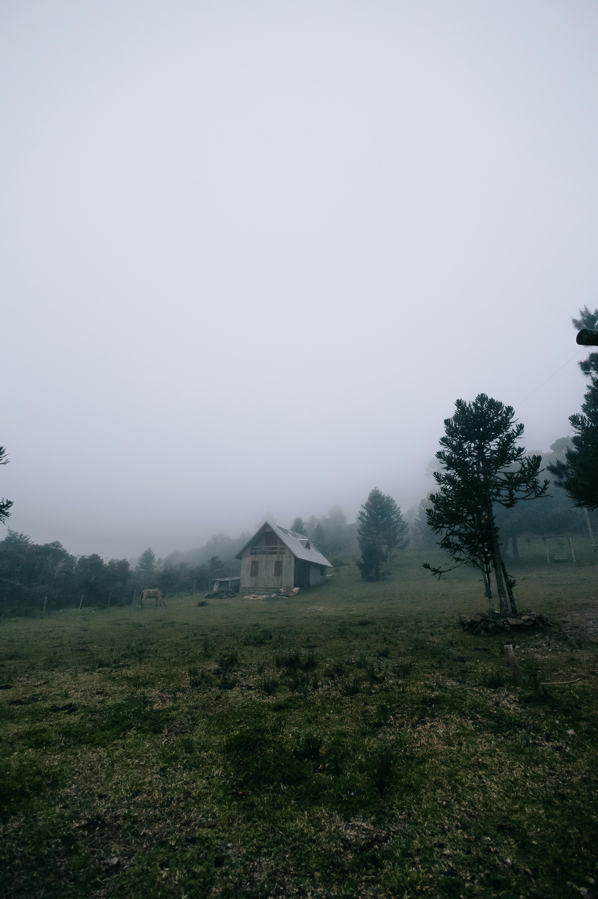

| Enquanto andava, a neblina engrossou. Provavelmente não será mais possivel voltar atrás. Depois de caminhar por algum tempo, você finalmente vê uma casa de madeira à distância. Aproximando-se cautelosamente dela você procura por sinais de vida, sem sucesso. Todas as portas estão fechadas e você não vê como abri-las. Você pode tentar usar o seu machado para arrebentar a porta, ou investigar os arredores mais um pouco. |  |
|---|